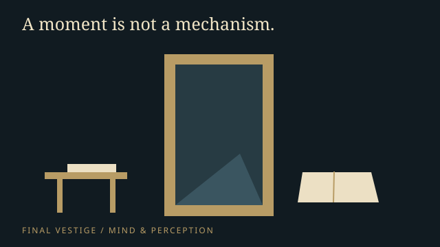

Unpublished · No checkout or earning links
Before You Buy Twelve-Minute Meditation Audio
Zen12 is sold as a convenient way to listen to guided and non-guided meditation recordings. That's a product description. Whether it delivers the dramatic results advertised on its sales pages is a separate question.
A familiar moment, with a less familiar answer
You leave your desk to fetch something and reach the next room with no idea what it was. Researchers have tested memory around spatial boundaries for twenty years. A 2006 experiment found an effect in a structured task; a 2021 study found no general significant forgetting effect across four changed tasks. The lesson for shoppers is not that a special frequency must repair memory. It is that a plausible-sounding brain story is not a substitute for a product-specific test. See the 2021 study.
Start with the free baseline
Before buying an audio course, choose one manageable task. Write down your goal, set a twelve-minute timer, and work in ordinary quiet conditions. Write what you finished and which interruptions appeared. Repeat on another day if you wish. This is a planning observation, not a memory treatment or a product trial. The established Seven Day Focus Fieldbook includes a structured version and questions to ask about meditation audio. It is free through the existing Dispatch/Jetpack subscriber list; this guide itself is freely readable without joining.
An optional 42-second source check
Before a merchant offer, this short film would explain how a plausible brain story differs from proof. The film is only a poster, caption and transcript concept in this branch. No playback is currently provided, and no media should be autoplayed.

Read the full 42-second narration and captions
00–07: You cross a doorway and forget why you entered. That feeling is real.
07–14: But one experiment is not a universal law about memory.
14–21: A 2021 study failed to find a general doorway-forgetting effect.
21–28: Context, working-memory load, and the kind of memory test matter.
28–35: Before buying audio, ask which benefits were tested on that product.
35–42: Try twelve quiet minutes, read the sources, and decide for yourself.
Storyboard: six equal seven-second scenes; textual captions in DOORWAY_42S_CONCEPT.vtt. Encoding, audible narration, browser playback and accessibility are not verified.
What the seller actually offers
At the standard Zen12 site https://zen12.com/, the seller describes approximately twelve-minute downloadable MP3 sessions organized across twelve levels. The site describes four presentation styles: relaxation music, guided meditation, nature sounds and white noise. It lists different Beginner, Premium and Advanced package structures; the total number of levels and MP3s differs by option. These features come from the seller's inventory, not from personal testing by Final Vestige.
A distinct promotional landing page at https://zen12.com/secret/ describes a full-course bundle and a variable discount/coupon presentation. It is not an established affiliate destination for Final Vestige. A promotional screenshot, coupon, refund claim or price should not be assumed to apply to the eventual permitted earning link. This guide deliberately publishes no checkout price or binding refund promise. Those must be verified at an authorized current offer, including any restrictions.
What has not been proven for this product
Zen12's seller advertising says a short session can give the benefits of a much longer meditation and makes broad claims about automatic brainwave effects, relaxation, focus and health. No authenticated product-specific independent controlled trial establishing these outcomes is supplied here. The 2023 systematic review of fourteen binaural-beat EEG studies found inconsistent findings and considerable methodological variation. It did not test Zen12. Neither a general meditation study nor a doorway experiment can be fairly substituted for such evidence.
Six decisions to make before paying
- Exactly which package? Compare the number of levels, recordings and support items promised on the precise checkout you will use.
- What is the format? Are the sessions downloadable MP3s you can retain and play on the equipment you already own?
- Which audio style? Do you want spoken guidance, nature sound, music or white noise? The choice is about preference, not a guaranteed effect.
- What is the return policy? Read the live checkout and terms, including deadlines, exclusions, payment identity and contact route.
- Which actual benefit is established? Ask for independent research on this exact product and outcome, not an unrelated experiment about meditation in general.
- Is there a free comparison? Try ordinary quiet practice before deciding whether structured audio adds value for you.
Who might consider it—and who might not
A reader who specifically wants short, structured recordings and enjoys the seller-described sound styles might choose to evaluate the exact offer. A reader who is satisfied with silent practice has no obligation to pay. Someone seeking proven treatment for anxiety, trauma, memory impairment or another health condition should not mistake this consumer-audio guide for medical advice. Nothing here promises savings, wealth, instant relief, better grades or improved cognition.
Independent verdict
The time-limited recording format is understandable. Product-specific superiority and the seller's hour-equivalence claims are unverified here. Our recommendation is to compare the current package's actual contents, price and returns with a free baseline and purchase only if its features—not an unsubstantiated neurological guarantee—are personally worth the cost.
Commercial link withheld · not an advertisement
Prospective affiliate disclosure: If a future approved purchase link appears here and you buy through it, Final Vestige may earn a commission at no additional cost to you. There is currently no active earning link.
This button cannot open a merchant or checkout. Final Vestige must first verify named partner acceptance, exact product and promotion-channel permissions, an issued link, checkout identity and refund/settlement rules.
Evidence trail
Primary experiments: 2006 doorway study, 2021 challenge, and 2026 virtual-boundary research. Audio evidence: 2023 systematic review. Seller descriptions: https://inspire3.com/, https://zen12.com/, and a separate unapproved offer at https://zen12.com/secret/. Requirements: FTC endorsement guidance and FTC health claims guidance.